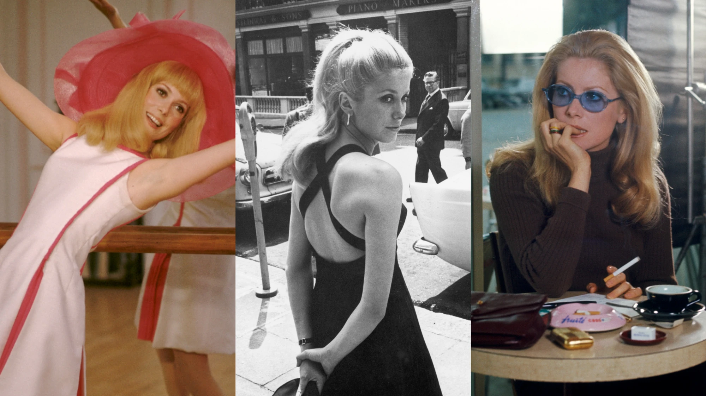

The indigenous artist helping women and non-binary poc reclaim their bodies
Gisela McDaniel's colorful paintings explore identity, familial roots and colonial violence, redefining portraiture through healing.
Kia Labeija's personal portrait of New York's ballroom scene
The artist's new exhibit 'Prepare My Heart' is an authentic look at ball culture and life with HIV.

Are we living in the age of the Manic Pixie Dream Boyfriend?
Recent reports indicate yes!
A guide to Kim Kardashian’s style evolution
As she covers the winter 2021 issue of i-D, we chart Kim's rise from socialite stylist to the world’s best dressed lawyer.
The Matrix 4 will also have a MetaHuman video game
Here's our latest look at the anticipated sequel, featuring an iconic Reeves and Ricci link-up and a new PS5 and Xbox universe-bending game tie-in.
The curious rise of botched plastic surgery videos
When life gives you a bad boob job, what do you do? If you're an influencer, you make a vlog about it, obviously.
Matthieu Blazy makes his debut for Bottega Venetas
The French-Belgian designer’s AW22 collection for the house was his first since — and it was all about “craft in motion”.

8 of the wildest Euphoria fan theories
Did Rue die in the very first episode?
Labrinth says Nate’s Euphoria music was inspired by flamenco & Kanye
Ahead of the finale episode, we spoke to the legendary producer about creating music for the show without actually watching it first.

7 of Catherine Deneuve’s most iconic outfits
One of the 60s foremost style icons, the French actress was a muse to Yves Saint Laurent and David Bailey.